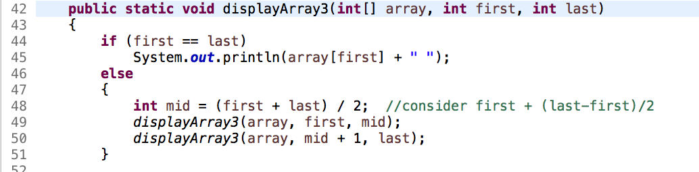

An initial call to displayArray3 has parameter values
of 0 and 20 for first and last
respectively: displayArray3(myArray, 0, 20).
Which is the correct sequence of subsequent calls?
There are no hints for this question